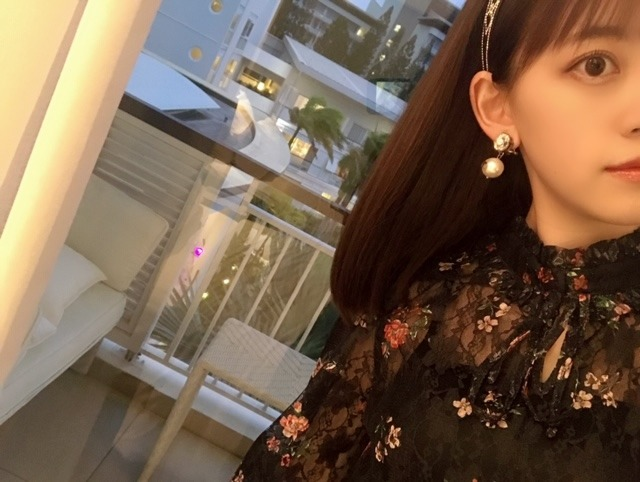
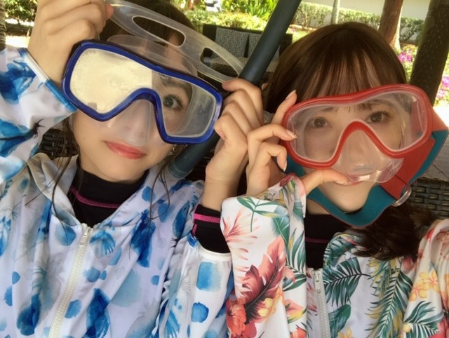

2019/1215Sun#乃木坂世界旅
昨日の #乃木坂世界旅
#堀北コンビ #ニューカレドニア編
見てくださいましたかー？☺︎

今日も21:00〜
Abema TVにて放送です！
見てね
TVの大画面でリアタイしてたのですが
わたしってこんな感じなんだ...と
驚きました。
日奈子といると自然と姉感？母感？が出てしまいます。
冷静で落ち着いた人よりも、個性があって一緒にいて面白い人と居るのがわたしは好きだなぁ。
バランスって大事。
いつも一緒にいるけど、こうして海外に行っても相変わらず楽しくて日奈子のハイテンションで子供みたいなところがわたしは大好きです☺︎❤︎
客観的に見るのも楽しかったし、
何よりも旅を思い出してまた日奈子と旅行いきたいな〜って思いながら観ていました☺︎
YouTube風の編集も嬉しかったです！
YouTubeやりたい〜
素敵な編集、そしてロケをしてくださった
スタッフの皆さんありがとうございましたm(__)m
今日のも楽しみ☺︎
感想も見てますよ〜

でははは
2019/12/15 13:42
コメント(248)
未央奈ちゃん可愛い！
ブログありがと！！
お母さんが子供みたいな堀北コンビの絡み好きです！
ずっと観てられる！
755でも引用してくれて嬉しかった〜！！
今夜もとても楽しみにそれまで勉強頑張ります！！
お母さんが子供みたいな堀北コンビの絡み好きです！
ずっと観てられる！
755でも引用してくれて嬉しかった〜！！
今夜もとても楽しみにそれまで勉強頑張ります！！
ブログ更新ありがとう！！未央奈ちゃんは4期生の人達や2期生のメンバーの姉感が出てる。日奈子ちゃんと未央奈ちゃんのトーク見てると姉感が大きいかなと思う！！
ブログ更新ありがとう☺
堀北コンビ好きです！
ニューカレドニア行ってみたいな✨
絢音ちゃんのブログのみおなちゃん、
なんかひょっこりしてて可愛い笑笑
堀北コンビ好きです！
ニューカレドニア行ってみたいな✨
絢音ちゃんのブログのみおなちゃん、
なんかひょっこりしてて可愛い笑笑
先日見ました！
未央奈ちゃんの言葉には心がうたれます！思わず涙が出ました
未央奈ちゃんの言葉には心がうたれます！思わず涙が出ました
乃木坂世界旅、勿論見たよ～。
ナレーションの方も言ってたけど、
きぃちゃんといると、みおなちゃんは
年上的ですよね。自制心が働くと言う
か。レコメンでまた言われちゃうかも
ね。
持っている個性や物事に対する感じ方
はきぃちゃんとは違うけど、乃木坂に
身を置いての活動を考える時、二人は
同じ方向を向いていると感じました。
アイドルに対するみおなちゃんの考察
は僕も同感だし、素敵な職業である事
は間違いありません。
二人で語らう場面では、実体験に基づ
いての話なので、説得力があるし、真
剣に向き合ってる事が、改めてわかり
ました。
二人とも美しかったです。
ナレーションの方も言ってたけど、
きぃちゃんといると、みおなちゃんは
年上的ですよね。自制心が働くと言う
か。レコメンでまた言われちゃうかも
ね。
持っている個性や物事に対する感じ方
はきぃちゃんとは違うけど、乃木坂に
身を置いての活動を考える時、二人は
同じ方向を向いていると感じました。
アイドルに対するみおなちゃんの考察
は僕も同感だし、素敵な職業である事
は間違いありません。
二人で語らう場面では、実体験に基づ
いての話なので、説得力があるし、真
剣に向き合ってる事が、改めてわかり
ました。
二人とも美しかったです。
未央奈ちゃんブログ更新ありがとう！
昨日乃木坂46世界旅みたよ！！
すごいはしゃいでて、お姉ちゃん感？(笑)があって
かわいかったぁぁ
とっても癒されたよ〜
きょうも楽しみ！
昨日の2期生への思いが感動した。。。
これからもいちばん！だいすき！
昨日乃木坂46世界旅みたよ！！
すごいはしゃいでて、お姉ちゃん感？(笑)があって
かわいかったぁぁ
とっても癒されたよ〜
きょうも楽しみ！
昨日の2期生への思いが感動した。。。
これからもいちばん！だいすき！
世界旅は見れないんだ〜…残念
でも、写真とか見るととっても有意義な時間を過ごせたようなので
よかったです！
楽しそう！
今日の世界旅もみんなが楽しみにしてると思います。
他の2期や先輩、後輩とも行けるといいね！
でも、写真とか見るととっても有意義な時間を過ごせたようなので
よかったです！
楽しそう！
今日の世界旅もみんなが楽しみにしてると思います。
他の2期や先輩、後輩とも行けるといいね！
商品紹介めっちゃ面白かったです❗
今日のも楽しみです！
今日のも楽しみです！
昨日の世界旅の前半では
お母さん感が出た母性本能大勢の
堀未央奈さんブログ更新ありがとう
堀北コンビ楽しかった〜
1番どうなるかと
楽しさが伝わってくるのが
わかる世界旅でした⁉︎
後半も楽しみにしときます⁉︎(^^)
水上バイクをおぼつかない感じで
運転していたのが可愛らしいかったなぁ〜
お母さん感が出た母性本能大勢の
堀未央奈さんブログ更新ありがとう
堀北コンビ楽しかった〜
1番どうなるかと
楽しさが伝わってくるのが
わかる世界旅でした⁉︎
後半も楽しみにしときます⁉︎(^^)
水上バイクをおぼつかない感じで
運転していたのが可愛らしいかったなぁ〜
カチューシャめっちゃ似合ってました
乃木坂世界旅1日目、途中からでしたが、観られました！
きぃちゃんとは流石に良いコンビですね！
2日目の今夜も観ます♪☆
きぃちゃんとは流石に良いコンビですね！
2日目の今夜も観ます♪☆
こんにちは。
昨日の乃木坂世界旅見ました。
楽しかったです。
昨日の乃木坂世界旅見ました。
楽しかったです。
ニューカレドニア綺麗で良いところだねえ。
料理も美味しそうだった。天使の海老だっけ。トリュフのチョコも。
そうだね。はしゃぐきいちゃんを見守る未央奈ちゃんって感じだったね。ヤンチャな未央奈ちゃんも見たいな。収集つかなくなりそう。でも、面白そう。
料理も美味しそうだった。天使の海老だっけ。トリュフのチョコも。
そうだね。はしゃぐきいちゃんを見守る未央奈ちゃんって感じだったね。ヤンチャな未央奈ちゃんも見たいな。収集つかなくなりそう。でも、面白そう。
ブログ更新ありがとう！
世界旅見たよ～☺
今日も楽しみにしてます✨
世界旅見たよ～☺
今日も楽しみにしてます✨
更新待ってました〜!!
今日も見るよ〜
実は、友達に未央奈ちゃんのことを
布教したら、その友達が
未央奈ちゃん推しになったよ〜
話が変わるけど堀北コンビは、
2期生が乃木坂に加入した時から
応援してて((その時は小1なんだけど笑
ずっと大好きだったから
乃木坂世界旅めっちゃ楽しんでる！
インスタも!!これからも未央奈ちゃんは
もちろん。堀北コンビを推していきます！
乃木フェスの推しメン未央奈ちゃんなんだけど
未央奈サンタ可愛すぎてやばい!!
でははは((未央奈ちゃんのマネ。次の更新も待ってます
今日も見るよ〜
実は、友達に未央奈ちゃんのことを
布教したら、その友達が
未央奈ちゃん推しになったよ〜
話が変わるけど堀北コンビは、
2期生が乃木坂に加入した時から
応援してて((その時は小1なんだけど笑
ずっと大好きだったから
乃木坂世界旅めっちゃ楽しんでる！
インスタも!!これからも未央奈ちゃんは
もちろん。堀北コンビを推していきます！
乃木フェスの推しメン未央奈ちゃんなんだけど
未央奈サンタ可愛すぎてやばい!!
でははは((未央奈ちゃんのマネ。次の更新も待ってます
ほりっぴ～、ナンチです♪
今日こそリアタイで見るぞ
仕事頑張る
今日こそリアタイで見るぞ
仕事頑張る
未央奈ブログ更新ありがとう！
乃木坂世界旅見たよー。本当に最高だった。
未央奈も自由で面白いと思うんだけど、日奈子の自由さが子供みたいで、未央奈の面倒見の良さがお母さんみたいだったね。無邪気な日奈子と一緒だから見られる未央奈の意外な一面って感じで面白かったよ。
最後の語り合う場面は感動した。未央奈はすごく二期生のことを考えてるし、日奈子は未央奈のことを理解して味方でいようとしてくれるんだなあって。そんな未央奈のこと応援し続けたいと思ったよ。
楽しそうな未央奈もしっかり者な未央奈も見せてくれる堀北コンビ大好き！また日奈子と旅行行けるといいね！
YouTube風の編集も面白かった。未央奈がYouTube始めたら面白いだろうな。
今日の放送も楽しみー。
では！
乃木坂世界旅見たよー。本当に最高だった。
未央奈も自由で面白いと思うんだけど、日奈子の自由さが子供みたいで、未央奈の面倒見の良さがお母さんみたいだったね。無邪気な日奈子と一緒だから見られる未央奈の意外な一面って感じで面白かったよ。
最後の語り合う場面は感動した。未央奈はすごく二期生のことを考えてるし、日奈子は未央奈のことを理解して味方でいようとしてくれるんだなあって。そんな未央奈のこと応援し続けたいと思ったよ。
楽しそうな未央奈もしっかり者な未央奈も見せてくれる堀北コンビ大好き！また日奈子と旅行行けるといいね！
YouTube風の編集も面白かった。未央奈がYouTube始めたら面白いだろうな。
今日の放送も楽しみー。
では！
こんにちは。
これから見て、今晩のはリアルで見れる様にします！
今回のお二方はどの様な旅になったのか、しっかり見届けたいと思います。
また見たら感想伝えにきますね。
★とし★
これから見て、今晩のはリアルで見れる様にします！
今回のお二方はどの様な旅になったのか、しっかり見届けたいと思います。
また見たら感想伝えにきますね。
★とし★
未央ちゃんブログ更新有り難うございます。日奈子と仲がいい、というより２期生と仲がいいと嬉しくなってしまいます。未央ちゃん応援してます。
堀北コンビ最高ですね！
母未央奈、姉未央奈も凄く良かったですよ！
2期生さいこ〜う！
母未央奈、姉未央奈も凄く良かったですよ！
2期生さいこ〜う！
チャァオ～～!☆彡
美しい～～～～⤴️⤴️⤴️
プリンセスみおちゃん、こんばんは～～⤴️⤴️❕❤️❤️❤️❤️❤️笑顔
乃木坂世界旅いいですねぇ～～～⤴️⤴️❕❤️❤️❤️❤️❤️笑顔
母親感のあるお姫様感のある～みおちゃんと
子供のようにはしゃぐ日奈子ちゃんが楽しい～～⤴️⤴️⤴️です❕❤️❤️❤️❤️❤️笑顔
おいらの性格はどちらかと言うと
冷静でいて行動はすばやいです❕笑顔
周りの状況を見ながらサポートするタイプなんです❕笑顔
早く言うと、美しい～みおちゃんがお姫様なら～～⤴️⤴️
おいらは～～～⤴️⤴️
完璧に～～～～⤴️⤴️・・
家来(けらい)ですねぇ・・ハイ❕❤️❤️❤️❤️❤️笑顔
・・❕笑顔
それでは、みおちゃんお仕事楽しく頑張ってねぇ～⤴️⤴️⤴️❕❤️❤️❤️❤️❤️笑顔
またねぇ～❕❤️❤️❤️笑顔
(*^▽^)/★*☆♪❤️❤️❤️
☆大人しい、おすまし！より☆彡
堀北コンビ最高。画面通して、相当、仲がいいというのがますます伝わってきて、特に、日奈子やの精神年齢が7ちゃいぐらいのテンションに対して堀ちゃんがママになって、注意するシーンなど、2人の息が合ってる所がまた可愛いです。テスト直前ですが、今日も見ない訳にはいかないんで、堀北コンビを見て、励みとしてテストに臨みます。
未央奈ちゃん、相変わらず綺麗ですね。
日奈子の方が微妙にお姉さんなんだよね。
髪の毛切ってめっちゃ可愛いって頃から、延びていって綺麗だなぁって思うようになってからお姉さん感が
出てきてますよ。昔の話になるけど、玲奈さんと、一対一で、話したときからなんかだと、かなりお姉さんになってると感じますよ。
後輩ちゃん達が、ちょいちょい未央奈さんにアドバイスもらってコメントしてるところを見ると、お姉さんですよ。
ではは。
日奈子の方が微妙にお姉さんなんだよね。
髪の毛切ってめっちゃ可愛いって頃から、延びていって綺麗だなぁって思うようになってからお姉さん感が
出てきてますよ。昔の話になるけど、玲奈さんと、一対一で、話したときからなんかだと、かなりお姉さんになってると感じますよ。
後輩ちゃん達が、ちょいちょい未央奈さんにアドバイスもらってコメントしてるところを見ると、お姉さんですよ。
ではは。
もちろん見るよ!
堀北コンビ最高 ✋
めっちゃ仲良いのが伝わってきた
めっちゃ仲良いのが伝わってきた
堀北コンビやっぱり大好き！
今日も楽しみにしてます？
今日も楽しみにしてます？
楽しみにして見ました。旅を楽しんでいて良かったです。二期生想いが募る語らいの場面では気持ちが分かるから、泣けてきます。二期生の事が大好きファンはたくさんいるよ だから頑張って
だから頑張って いつか近いうちに叶うようにファイト
いつか近いうちに叶うようにファイト
ブ～ン、飛んできましたぁ。
ニューカレドニアって今は暖かいの？
寒さが苦手な僕はこの時期つらいですが。
怒涛のスケジュールですが
元気で風邪引かないでねっ！
またね、(^^)/
ニューカレドニアって今は暖かいの？
寒さが苦手な僕はこの時期つらいですが。
怒涛のスケジュールですが
元気で風邪引かないでねっ！
またね、(^^)/
未央奈ちゃん♪こんばんは＼(^o^)／
乃木坂世界旅見たよ(≧∇≦)
今日も凄く楽しみ(*^^*)
未央奈ちゃんの母感凄く大好きだよ♪
未央奈ちゃんのYouTube凄く見たい！
凄く面白そう(*^^*)
体調崩さないように気をつけてね。
またね♪
未央奈ちゃん神推し
秀喜より！(≧▽≦)
乃木坂世界旅見たよ(≧∇≦)
今日も凄く楽しみ(*^^*)
未央奈ちゃんの母感凄く大好きだよ♪
未央奈ちゃんのYouTube凄く見たい！
凄く面白そう(*^^*)
体調崩さないように気をつけてね。
またね♪
未央奈ちゃん神推し
秀喜より！(≧▽≦)
お化粧のYouTuber一回やってほしいなぁ〜！
この2人とても大好き‼️
ますます2期生応援しちゃいますっ❣️
忙しいのとお金がないので握手会やライブなどのイベントが家からととても遠い所が沢山なので心からいつも応援してるよ❣️
でも本当に2期のチームワーク？がとても好き❗️
これからの活躍期待してます！
堀ちゃんの乃木中のメイク見てて楽しかった❗️
テレビの世界に入った
私も化粧にさらに持ちました！
もしまたコスメ紹介やれるならまたブログに書いて欲しいなぁ〜！
お互い頑張りましょう‼️
どんな時でもどんな堀ちゃんでも応援してます！
もし嫌な事相談とかブログ書いたらコメントで返せるところは
返したいと思います
でわまたブログ更新待ってます
ブログ更新ありがとう
この2人とても大好き‼️
ますます2期生応援しちゃいますっ❣️
忙しいのとお金がないので握手会やライブなどのイベントが家からととても遠い所が沢山なので心からいつも応援してるよ❣️
でも本当に2期のチームワーク？がとても好き❗️
これからの活躍期待してます！
堀ちゃんの乃木中のメイク見てて楽しかった❗️
テレビの世界に入った
私も化粧にさらに持ちました！
もしまたコスメ紹介やれるならまたブログに書いて欲しいなぁ〜！
お互い頑張りましょう‼️
どんな時でもどんな堀ちゃんでも応援してます！
もし嫌な事相談とかブログ書いたらコメントで返せるところは
返したいと思います
でわまたブログ更新待ってます
ブログ更新ありがとう
みおな
なんかめっちゃ楽しかったみたいねー。
昨日見てて思ったんよ。
なんかめっちゃ楽しかったみたいねー。
昨日見てて思ったんよ。
未央奈ちゃん‼︎
「さてさてさてさ〜い」言い方が面白くて良かったです
普段の姿が見ることができて乃木坂世界旅面白いです‼︎忙しくて大変だと思いますが、乃木坂世界旅という企画でメンバーの方が仕事を忘れてゆっくり楽しく過ごせるのはとてもいい事だと思います
未央奈ちゃん本当に大人っぽく綺麗になって今夜も世界旅観るのが楽しみです
いつもありがとうございます‼︎
「さてさてさてさ〜い」言い方が面白くて良かったです
普段の姿が見ることができて乃木坂世界旅面白いです‼︎忙しくて大変だと思いますが、乃木坂世界旅という企画でメンバーの方が仕事を忘れてゆっくり楽しく過ごせるのはとてもいい事だと思います
未央奈ちゃん本当に大人っぽく綺麗になって今夜も世界旅観るのが楽しみです
いつもありがとうございます‼︎
未央奈、ブログ更新ありがとう(*´∀｀)
もちろん！観たよ(о´∀`о)
堀北自撮り劇場面白すぎＯ(≧∇≦)Ｏ
堀北ワールド全開で良きだったよ(*´ω｀*)
未央奈の母感半端なかった！
素敵です( ￣▽￣)
地元のギャルに絡まれてたシーン？！も面白かった(≧▽≦)
食リポ上手だったよ！
未央奈は何でも出来るね！流石(゜∇^d)!!
美味しそうに食べる未央奈にホッコリしたよ！
今日のDay2も楽しみすぎるよ！
ではでは(*￣∇￣)ノ
もちろん！観たよ(о´∀`о)
堀北自撮り劇場面白すぎＯ(≧∇≦)Ｏ
堀北ワールド全開で良きだったよ(*´ω｀*)
未央奈の母感半端なかった！
素敵です( ￣▽￣)
地元のギャルに絡まれてたシーン？！も面白かった(≧▽≦)
食リポ上手だったよ！
未央奈は何でも出来るね！流石(゜∇^d)!!
美味しそうに食べる未央奈にホッコリしたよ！
今日のDay2も楽しみすぎるよ！
ではでは(*￣∇￣)ノ
もちろん見た！今日ももちろん見るよ！
きいちゃんに最近どハマりしたんだ
全ツの日常最高すぎた
まだ海外未経験だから行きたいなあ
ちなみに俺未央奈ときいちゃんと同い年の23歳です！
きいちゃんに最近どハマりしたんだ
全ツの日常最高すぎた
まだ海外未経験だから行きたいなあ
ちなみに俺未央奈ときいちゃんと同い年の23歳です！
へい未央奈(•ө•)
・ ワールドツアーを目指すのであれば、海外での経験も大事だと思う。遊びに行くだけならお金さえあればいけるけど、経験値はお金では買えないから、仕事で海外に行く事があれば、そこでの経験を得て、次回に活かしていかないといけないと思うんだ。..と俺は思うけど、そこまで堅苦しく考えるのは俺ぐらいなもんだろうかハハ。笑
・ジュマンジネクストのじいさんもゲームの世界に入る前は、偏屈じいさんで、年をとって体が不自由になった事に不平不満を感じてたけど、ゲームの世界に入って色々な経験をして考え方を改めてからは、年を取ることは天からの贈り物みたいな事を言ってたから、じいさんもジュマンジの世界で経験した事が心の中で大きな変化に繋がったんだと思う
・今週の週末は東京だ( •̀ㅁ•́;)スターウォーズ展や、三鷹の森ジブリ美術館に行きたいが、チケットお高いわな。笑
後は、ほりぴー家の豪邸に泊まらせていただければ、一泊浮くんだけどなールパン三世のお礼は身体でって言ってたけど、俺のお礼は俺のサインかな( ͡° ͜ʖ ͡°)。笑(未央奈:全く価値ないわ！。笑)
・おやすみおなー
・ ワールドツアーを目指すのであれば、海外での経験も大事だと思う。遊びに行くだけならお金さえあればいけるけど、経験値はお金では買えないから、仕事で海外に行く事があれば、そこでの経験を得て、次回に活かしていかないといけないと思うんだ。..と俺は思うけど、そこまで堅苦しく考えるのは俺ぐらいなもんだろうかハハ。笑
・ジュマンジネクストのじいさんもゲームの世界に入る前は、偏屈じいさんで、年をとって体が不自由になった事に不平不満を感じてたけど、ゲームの世界に入って色々な経験をして考え方を改めてからは、年を取ることは天からの贈り物みたいな事を言ってたから、じいさんもジュマンジの世界で経験した事が心の中で大きな変化に繋がったんだと思う
・今週の週末は東京だ( •̀ㅁ•́;)スターウォーズ展や、三鷹の森ジブリ美術館に行きたいが、チケットお高いわな。笑
後は、ほりぴー家の豪邸に泊まらせていただければ、一泊浮くんだけどなールパン三世のお礼は身体でって言ってたけど、俺のお礼は俺のサインかな( ͡° ͜ʖ ͡°)。笑(未央奈:全く価値ないわ！。笑)
・おやすみおなー
昨日の握手会行ったよー
一番最後に未央奈いってめっちゃ可愛くてやばかったです。ブログコメントしてることいったんで覚えてくれてるとうれしいですー
まじで癒されました
一番最後に未央奈いってめっちゃ可愛くてやばかったです。ブログコメントしてることいったんで覚えてくれてるとうれしいですー
まじで癒されました
お仕事でお忙しい中でもブログを更新して下さって本当に有り難うございます
「堀熱大陸」さんも大好きで何回も観ていて、「発信力」と「感謝」、そして、お仕事への16才からの「ご覚悟」が本当に素敵で格好いいなあ〰️
乃木坂46のメンバーの方々もスタッフさんも私を含めてファンの方々も未央奈ちゃんがアイドルになって下さって本当に幸せだと思います
私、21才で未央奈ちゃんと年が近くて、９月生まれで誕生日も近いし、同じ天秤座なので、とても嬉しいです
未央奈ちゃんも日奈子ちゃんもとっても可愛いです
特に「嫉妬の権利」のＭＶはショートヘアーも本当に可愛いくて大好きです
「乃木フェス」でも未央奈ちゃんを推しメンにさせて頂いていて、最近「乙女神楽」も始めたんですけど、神人と戦う姿もザンビの姿も本当に可愛かったです
「ショールーム」のツインテール姿もとっても可愛かったです
握手会とかでお会い出来たら是非綺麗なお花や可愛いプレゼントとかをお渡しさせて頂きたいですね
乃木坂46さんも女優さんの夢も心から応援させて頂いています
未央奈ちゃんの事が本当に大好きです
最高っす!
ブログ更新、ありがとうございます。
乃木坂世界旅、見ました。
おもちゃ屋さんでの、小さい時のおサルさんエピソードが
面白かったです。
エピソードからすると嫌いになりそうだけど、
好きになったのはなぜか、考えると夜も寝られない。
今夜も楽しみにしています。
では。
乃木坂世界旅、見ました。
おもちゃ屋さんでの、小さい時のおサルさんエピソードが
面白かったです。
エピソードからすると嫌いになりそうだけど、
好きになったのはなぜか、考えると夜も寝られない。
今夜も楽しみにしています。
では。
ますます未央奈が好きになりました
そして、2期生みんな応援してます！諦めちゃだめ。そう、諦めたらそこで終わりですからね！諦めたら何も残りません。だから、思う存分したいことしてください
未央奈は俺の心の支えです
未央奈のおかげで色々なこと頑張れています！だから、浮いたとしてもずっと応援して見守り続けます❗️
体調管理だけ気をつけてねたまにはホッと一息も大事です！
ライブ、握手会で会えるの楽しみにしてます！今日の乃木坂世界旅も見るねー
そして、2期生みんな応援してます！諦めちゃだめ。そう、諦めたらそこで終わりですからね！諦めたら何も残りません。だから、思う存分したいことしてください
未央奈は俺の心の支えです
未央奈のおかげで色々なこと頑張れています！だから、浮いたとしてもずっと応援して見守り続けます❗️
体調管理だけ気をつけてね
ライブ、握手会で会えるの楽しみにしてます！今日の乃木坂世界旅も見るねー
こんばんは。ブログ更新ありがとうございます。
ニューカレドニアかー。いいですねー。天国に一番近い島でしたっけ？私も予算に余裕があれば、行ってみたいです。でも一番行きたいのは沖縄かな。
ではまた。
ニューカレドニアかー。いいですねー。天国に一番近い島でしたっけ？私も予算に余裕があれば、行ってみたいです。でも一番行きたいのは沖縄かな。
ではまた。
未央奈ブログ更新ありがとー！
未央奈大好き！
未央奈大好き！
堀北コンビは最強だね！二人共大好きな推しメンです(●^▽^●)/''
中学生のふくふくより
中学生のふくふくより
堀さん！！めちゃくちゃ久しぶりのコメントになりました
ごめんなさいいい
これからは絶対に毎回コメントします！！！
きぃちゃんとのほっぺ坂の動画も面白かったですよ！
仲良しで楽しそうだし見ててこっちも笑っちゃいました！
最近は大学の研究が忙しすぎてなかなかイベントにも行けてないのです
だから早く終わったらまた堀さんに会いに行きたいです！！
待ってて下さい！？すぐに行きますからね！！
めっちゃふと思った疑問なんですけど、飛鳥とみなみのコンビはあしゅみなって言うじゃないですか？
堀さんとみなみのコンビはみなみおなって言うじゃないですか？
それなら、堀さんと飛鳥のコンビは何って言うんですか？？
めっちゃふと思ったんです
ごめんなさいいい
これからは絶対に毎回コメントします！！！
きぃちゃんとのほっぺ坂の動画も面白かったですよ！
仲良しで楽しそうだし見ててこっちも笑っちゃいました！
最近は大学の研究が忙しすぎてなかなかイベントにも行けてないのです
だから早く終わったらまた堀さんに会いに行きたいです！！
待ってて下さい！？すぐに行きますからね！！
めっちゃふと思った疑問なんですけど、飛鳥とみなみのコンビはあしゅみなって言うじゃないですか？
堀さんとみなみのコンビはみなみおなって言うじゃないですか？
それなら、堀さんと飛鳥のコンビは何って言うんですか？？
めっちゃふと思ったんです
みおちゃんブログ更新ありがとう♪
乃木坂世界旅堀北コンビ編見たよー(^-^)
めちゃくちゃ癒されたし、笑ったし、本当に2人の魅力が詰まった一日目だったね♪
常に元気なきいちゃんと、オンオフがハッキリしてるみおちゃんのちょどいいバランスが旅を盛り上げてたね(・ω・)
今日も楽しみにしてます♪
福岡のトゥモロー⊿
乃木坂世界旅堀北コンビ編見たよー(^-^)
めちゃくちゃ癒されたし、笑ったし、本当に2人の魅力が詰まった一日目だったね♪
常に元気なきいちゃんと、オンオフがハッキリしてるみおちゃんのちょどいいバランスが旅を盛り上げてたね(・ω・)
今日も楽しみにしてます♪
福岡のトゥモロー⊿
未央奈ちゃん！
ブログ更新ありがとう!
好きな人と一緒にいると、輝いて見えますね！
これからも輝き続けることを祈っています。
応援してるよ☺️☺️
ブログ更新ありがとう!
好きな人と一緒にいると、輝いて見えますね！
これからも輝き続けることを祈っています。
応援してるよ☺️☺️
未央奈ブログ更新ありがとう！
もちろん世界旅観たよ
もちろん世界旅観たよ
乃木坂46最初のYouTuber(ﾟ∀ﾟ)


乃木坂世界旅見たよー！✨
未央奈ちゃんと日奈子ちゃんの2人が一緒にいるのを見ているだけでも、幸せになれる！
未央奈ちゃんと日奈子ちゃんの2人組が1番ベストって感じで、仲がいいと言うのがとても伝わって来たよ〜✨
YouTubeやってみてー！（笑）✨
やってくれたら、絶対に見るからね！笑
これからも色々と頑張ってね〜✨
応援してまーす！